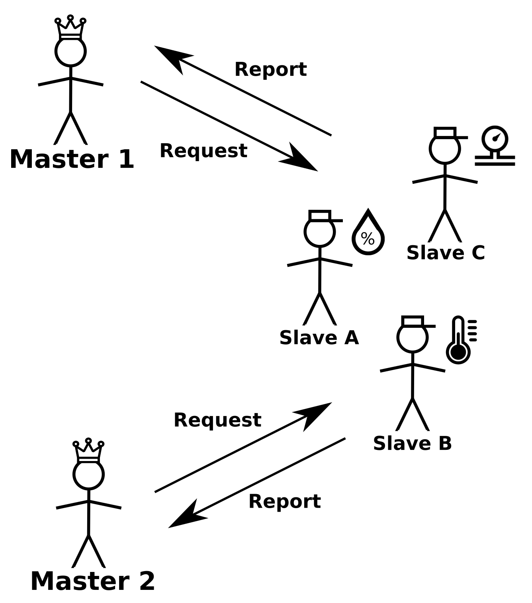
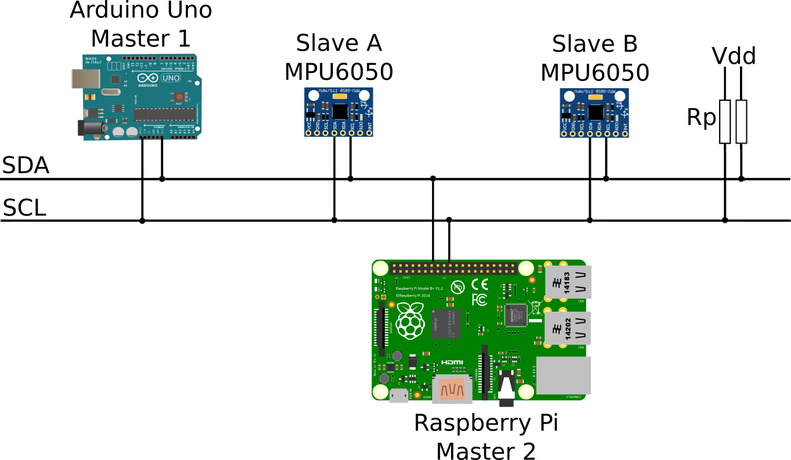
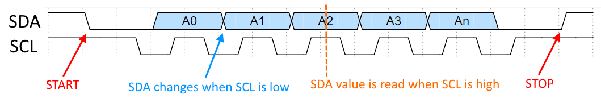

I2C (pronounced I-two-C) is a very popular communication protocol in the world of microcontrollers. It's advantage is that it allows communication between multiple devices by using only two wires, SDA (Serial Data Line) and SCL (Serial Clock Line), unlike USART or SPI where every pair of devices needs its own set of wires. The protocol was invented by Phillips Semiconductors in 1982. The first time I encountered I2C was when I wanted to measure the orientation in space with my Arduino. For that purpose I bought an MPU6050 inertial measurement unit (IMU) that required I2C to talk to it. At first I was really confused since I had no experience with digital communication protocols except some basic understanding of USART from using Arduinos Serial library. The first time I looked at an example code for reading accelerometer and gyroscope data from the MPU6050, it scared the hell out of me with ~100 lines of code consisting of nothing but a bunch of hexadecimal register addresses. This is when I realized that in order to learn anything more than just sending a "Hello World!" via serial line I would have to dedicate some more time. In this tutorial I will try to do my best to explain the principle of the I2C protocol and show an I2C example using an Arduino, ATMega328P and Raspberry Pi, but not all at once, I will start with an Arduino Uno and add examples with other devices later. For all the examples I will use the MPU6050, but you may use whichever device you desire.
To explain how the protocol works I will use an example of three human slaves, where each one monitors a different sensor and reports the reading to the one of the two masters when they request it. Slaves and masters use walkie-talkies to talk to each other. Image below shows the three slaves and two masters.
Slave A monitors a humidity sensor, slave B a thermometer and slave C a barometer. Masters 1 or 2 can ask the slaves for readings whenever they want. In smaller microcontroller projects, you will most likely use a single master, but in order to explain the full functionality of I2C, I'm using two masters.
Since there are three different slaves, each one of them has a name (an address) by which the master is going to get their attention. To keep it simple I will just name them A, B an C, as depicted on the image. They agreed in advance that to get the data from the slaves, a master has to first remotelly ring a bell at the site where the slaves are, get the desired slave's attention by calling the slave's name and then tell the slave in what units the data should be reported. Once the master gets a pencil and a paper to write down the measurement from the slave he/she transmitts the name of the slave again, which means that the slave should report the measurement. Once the measurement is written down, the master rings the bell twice to mark the end of the conversation. To make sure that a certain slave is present (better be) and that the instruction was heard, the receiver acknowledges that the instruction was received (let's assume that the masters have some respect for the slaves, so both acknowledge by transmitting "yes sir"). If the master is happy with the received message, he/she transmitts "enough", to indicate that this was all that was needed. I will call this "enough" as not-acknowledged (sounds weird, but you will see later why I call it like that). In order for the master 1 to receive the temperature in Fahrenheit from the slave B, the conversation would go as following:
| Message Type | Person | Message |
|---|---|---|
| Start Condition | Master 1: | |
| Slave Address | Master 1: | "slave B listen" |
| Slave's Acknowledgment | Slave B: | "yes sir" |
| Slave Instruction | Master 1: | "report temperature in F" |
| Slave's Acknowledgment | Slave B: | "yes sir" |
| Slave Address | Master 1: | "slave B go ahead" |
| Slave's Acknowledgment | Slave B: | "yes sir" |
| Slave Report | Slave B: | "95" |
| Master's Not-acknowledgment | Master 1: | "enough" |
| Stop Condition | Master 1: |
Just to understand another important concept let's assume that the master 1 wants to know the pressure in psi and MPa from the slave C. They also agreed in advance that whenever the master acknowledges the receival by "yes sir", the slave then just transmitts the measurement in another unit right after. Slave C keeps track of pressure measurements in psi, MPa, atm and torr, so if the master received the measurement in psi, he/she acknowledges the message by "yes sir", to let the slave know to send the pressure in kPa as well. The slave keeps sending the measurement until the master "not-ackowledges" the receival by "enough" or until the slave has no more measurements to send. The conversation for receiveing pressure mesurements in psi and kPa would go like this:
| Message Type | Person | Message |
|---|---|---|
| Start Condition | Master 1: | |
| Slave Address | Master 1: | "slave C listen" |
| Slave's Acknowledgment | Slave C: | "yes sir" |
| Slave Instruction | Master 1: | "report pressure in psi" |
| Slave's Acknowledgment | Slave C: | "yes sir" |
| Slave Address | Master 1: | "slave C go ahead" |
| Slave's Acknowledgment | Slave C: | "yes sir" |
| Slave Report | Slave C: | "14.7" |
| Master's Acknowledgment | Master 1: | "yes sir" |
| Slave Report | Slave C: | "1013.5" |
| Master's Not-acknowledgment | Master 1: | "enough" |
| Stop Condition | Master 1: |
This acknowlegment, not-acknowledgment agreement would prove more usefull if there was only one slave who was measuring all the different sensors at once. In that case the master would just tell the slave to report whatever measurement was the first on the list and keep acknowledging untill all the required measurements were received. The communications seems quite complicated and redundant, but this protocol is not really intended for humans, but digital devices instead. By saying that they know something in advance", it is implied that these are the rules of the protocol. Before going into the world of digital devices, let's go over some of the specifications and prerequisites.
In order to follow the tutorial you should be familiar with:
The devices communicating via I2C are all connected to the same set of wires, SDA (Serial Data Line) and SCL (Serial Clock Line), where all the data transfers takes place. The two wires constitute the I2C bus. As shown in the example above, I2C is a multi-master, multi-slave protocol, which means that a system of nodes (devices) can have multiple master devices and multiple slave devices. To understand what this means you need to understand what each one of them does. In a few words:
Microcontrollers such as the Arduino (ATmega328P) can be configured to act as a master or a slave device, whereas simpler sensor devices usually support only the slave mode.
One thing to keep in mind when using multiple masters is that they cannot communicate with each other, but they have to listen to I2C bus if anyone else is transmitting before requesting data from the slaves, so they don't request it at the same time, since the slaves would not understand what masters want if they request something at the same time. This also applies to the regular conversation between people. If you talked to an audience, everyone who listened would understand what you are saying (assuming you talked loud and clear in a language everyone understood). But if everyone in the audience tried to tell you something at the same time, you would just hear some jibber jabber. If two or more master devices would transmit a packet to slaves at the same time, the packets would collide, so in case of a multi-master I2C setup, some sort of packet collision aviodance mechanism has to be implemented. As I wrote before, this only applies if you have a project consisting of multiple master devices, otherwise do not worry about this now.
SDA is where the data, the payload, is transmitted between the devices.
SCL is where the master sends the generated clock signal that the slave devices receive. With this said, a shared clock between the master and slave devices makes I2C a synchronous protocol, in contrast of USART, which is asynchrounous. In asynchronous protocols the two devices talking to each other need to know in advance the rate at which they will transfer bits (baudrate).
The clock that the master generates defines the rate at which the data is transfered. I2C supports various clock speeds, but simple devices commonly used in microcontroller projects support the original 100 kHz mode or the 400 kHz fast-mode. The fastest supported mode for I2C right now is 5 GHz Ultra Fast-mode.
The number of devices that I2C can communicate with are defined by the number of bits each device's address consists of. I2C devices can have 7 or 10 bit addresses. In theory, the largest number that a 7-bit address can be is (1111111)2 or (127)10, which defines the maximum number of devices connected to the same I2C bus. Since there are some addresses that are reserved and cannot be used for addressing, the maximum number of devices with 7-bit addresses is (112)10. (I am using the parentheses with a subscript to indicate the base of the number, so 2 for binary and 10 for decimal and 16 for hexadecimal.) The maximum number of devices is also limited at the physical layer by the total bus capacitance.
I2C addresses as well as any other memory addresss (registers, etc.) are by convention expressed in hexadecimal. Hexadecimal numbers are much more convenient then binary, since in binary the addresses would become very long, which would be very hard to remember and prone to mistakes. The conversion between hexadecimal and binary is much easier then between decimal and binary. Sometimes I will use the C-language syntax to indicate the base of the numbers, where decimal numbers are depicted simply as the number itself, binary numbers have 0b prefix (ex: 0b1010 = 10) and hexadecimals have 0x prefix (ex: 0xA = 0b1010 = 10).
To give the just explained information more sense, let's consider a real I2C example shown below.
This setup uses two masters, one is an Arduino Uno used to control something and the other one is a Raspberry Pi used for storing the data to a remote database. The slaves are two MPU6050 IMUs, one placed on top of the left and the other on top of the right hand to get the acceleration and angular rates. (Improve the application!!!)
As we switched from people to digital devices, the first thing to do is to wire them properly. As you can see on the image above, both I2C wires, SDA and SCL are connected to the same voltage source by 2 pull-up resistors. The reason the pull-up resistors are used is that the I2C lines are open-drain (or open-collector in TTL), which means that the signal can be pulled to low, but not to high. For projects with Arduino, Raspberry Pi and other similar devices, the source is usually 3.3 V or 5 V. The selection of pull-up reisistors is a bit more complicated, since an optimal resistance depends on the length of the wires and the number of connected devices to the bus. Sparkfun recommends to start with 4.7 kΩ resistors and work down if needed. All of the devices have to be to be connected to a common ground, this is very important. Before getting all frustrated by selecting proper pull-up resistors make sure that the devices you are going to use don't implement them already, for instance MPU6050 has both lines connected to high with 4.7 kΩ resistors.
Now that all's hooked up, let's go into the basics of the protocol. The clock signal on the SCL is generated by the master devices when it initiates the communication. When no communication is taking place, the SCL is constantly pulled to high. A very important rule of the protocol is that a signal on SDA can change only when the clock is low, except when the master assign the start and stop of the communication. Start and stop conditions consist of a change of state when the clock is high, they are defined as:
Right after the start condition is transmitted by the master, other communication information follows. Devices decode whether the bit send is true or false, by checking if the voltage is high or low when the clock (SCL) is high. It's easier to exapain this with a simple timing diagram as shown below: (For drawing timing diagrams I use WaveDorm.)
In this example I will use devices with 7-bit addresses, slave A has the address (68)16 and slave B the address (69)16. So in order to address the right slave, its address has to be sent in binary right after the start bit. So to address the (68)16 MPU6050, (1101000)2 has to be sent.
Just like the master had to tell the slave wheter to listen or do report the data, the master device has to do the same, so the bit sent after the address is called the READ/WRITE bit, where:
Sometimes the addresses are written as devices write and read address. Those addresses are just the 7-bit device's address with the READ/WRITE bit appended. For the (68)16 MPU6050 we could write read and write addresses as following:
After the slave know whether a master wants to receive data from it or write to it, it has to acknowledge/not-acknowledge the message. The acknowledge bit is depicted as ACK and not-ackowledge as NACK, where:
To recap how the whole communication between a master and a slave goes, I will show it in a similar table I used in the second example, except here I will use an IMU for getting the 16-bit unsigned integer reading of the acceleration in X direction (the coordinate axis is draw on the accelerometer, this information doesn't really mattter for now). Because only 8-bit number can be read from a device right now and because the IMU (as well as the ATmega328P) store the data in 8-bit registers, 16-bit numbers have to be store in two separate registers. The most significant 8 bits are stored at one location and the least significant 8-bit are stored at another location, most of the time they are in the next location from the most significant bit, so they can be read one after another. Here is the table:
| Message Type | Device | Verbal | Digital |
|---|---|---|---|
| Start Condition | Master 1: | SDA | |
| Slave Address | Master 1: | "slave C listen" | (11010000)2 Slave Write Address |
| Slave's Acknowledgment | Slave C: | "yes sir" | ACK 0 |
| Slave Instruction | Master 1: | "report X-accelerationX (High Byte)" | (XXXXXXXX)2 Register to get the data from |
| Slave's Acknowledgment | Slave C: | "yes sir" | ACK 0 |
| Slave Address | Master 1: | "slave C go ahead" | (11010001)2 Slave Read Address |
| Slave's Acknowledgment | Slave C: | "yes sir" | ACK 0 |
| Slave Report | Slave C: | "14.7" | (XXXXXXXX)2 8-bit data value |
| Master's Acknowledgment | Master 1: | "yes sir" | ACK 0 |
| Slave Report | Slave C: | "1013.5" | (XXXXXXXX)2 8-bit data value |
| Master's Not-acknowledgment | Master 1: | "enough" | NACK 1 |
| Stop Condition | Master 1: | SDA |
Now let's see if all I said in this post is true, by looking at the oscilloscope output of SDA and SCL measurements while talking to MPU6050 with Arduino Uno.
Author: alex.kraljic@gmail.com